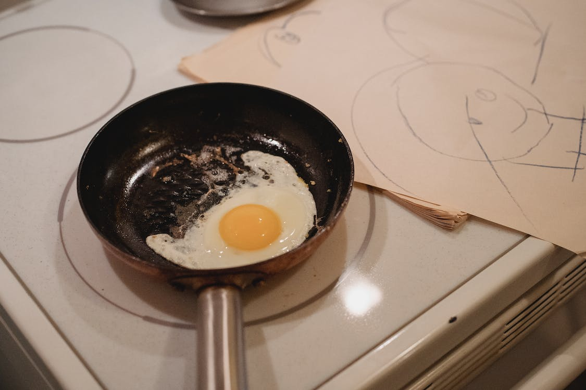
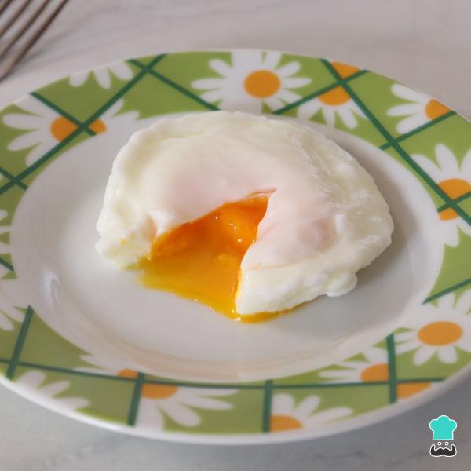

Como fritar um Ovo

Modo de Preparo
- Numa tigela pequena quebre o ovo, com cuidado para não furar a gema.
- Leve uma frigideira antiaderente ao fogo baixo e regue com 1 colher (chá) de azeite. Com cuidado, transfira
o ovo para a frigideira e deixe cozinhar por cerca de 2 minutos – com uma espátula de silicone, vá puxando a
borda da clara para perto da gema, para manter o formato arredondado do ovo.
- Assim que a clara começar a firmar, tempere com sal e pimenta a gosto e tampe a frigideira para o ovo
terminar de fritar mas a gema ainda ficar mole – o vapor permite que a clara cozinhe por igual sem a base do
ovo queimar. Sirva a seguir.
| Ingredientes |
Quantidade |
| Ovo |
1 |
| Sal |
1g |
Como fazer Ovo Mexido

Modo de Preparo
- Em um prato fundo, bata ligeiramente os ovos com o Leite MOLICO, o sal e o orégano.
- Em uma frigideira, aqueça o óleo, junte os ovos e deixe cozinhar mexendo sempre por cerca de 3 minutos.
- Sirva a seguir.
| Ingredientes |
Quantidade |
| Ovo |
1 |
| Sal |
1g |
| Leite Molico |
100ml |
| Óleo |
Fio |
Como fazer Ovo Poché

Modo de Preparo
- Quebre o ovo em um recipiente e reserve.
- Numa panela, leve ao fogo a água com o vinagre e deixe ferver. Baixe o fogo, mexa a água até formar um
"redemoinho" e coloque o ovo no meio.
- Deixe cozinhar por 3 minutos, retire e resfrie na água fria se quiser uma gema bem mole.
- Tempere com sal e pimenta e sirva a seguir.
| Ingredientes |
Quantidade |
| Ovo |
1 |
| Sal |
1g |
| Vinagre |
Meia Xícara |